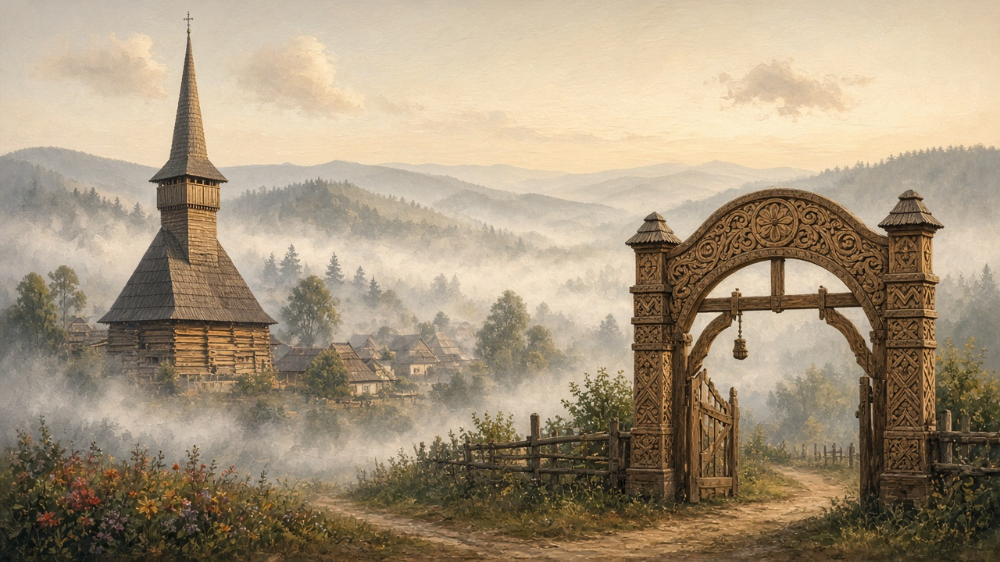
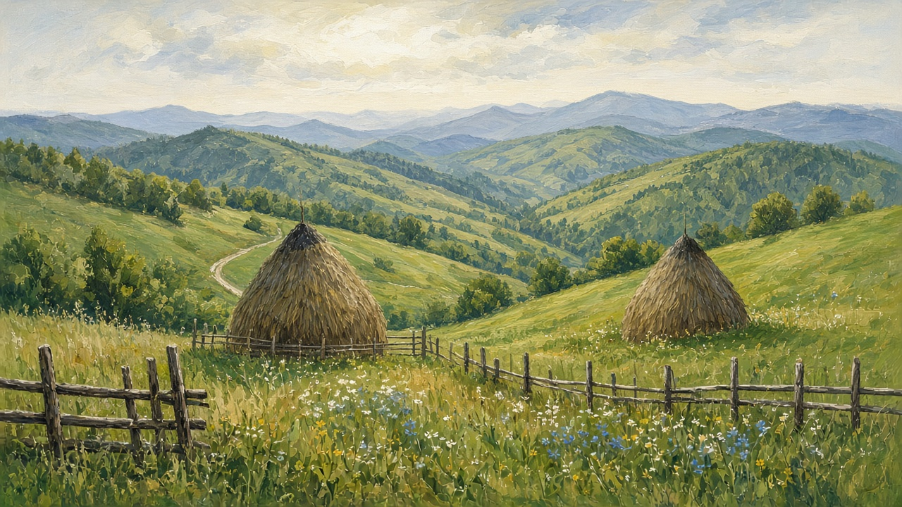
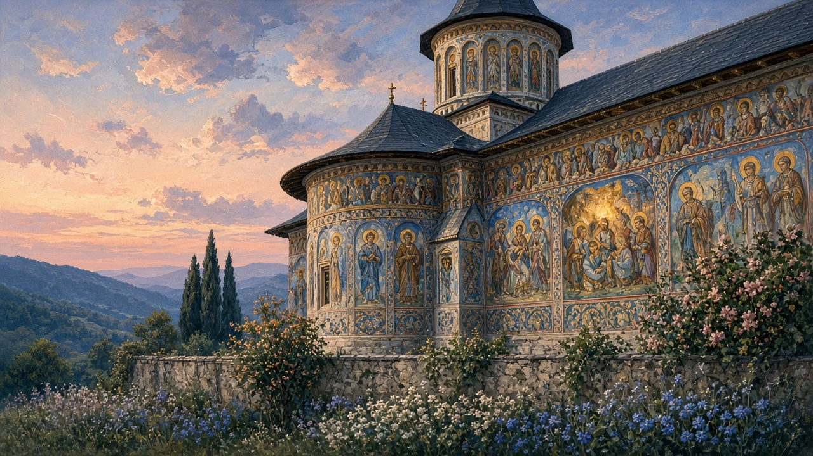

Northern Romania
Nordul. Maramureș, Bucovina, northern Moldavia, and the high Carpathians. Not a circuit. The part of the country where the roof is still the first thing you see, and winter is a fact before it is a picture.

The ridge and the names
The Carpathians do not stop at a county line. They hook through the north and make valleys that keep their own weather. People say Maramureș, Bucovina, Moldova de nord — names that sit more steadily than any tourist region. One ridge looks at wood and șindrilă. A few hours east, the next valley looks at painted brick. The language is the same. The skyline is not. Ask which valley before you decide you have understood the north, the same habit the villages page asks for the sat.
Maramureș
Wood. The poartă can be taller than the house, carved with rope and sun and a short prayer — that monument is on gates. You walk under it into a yard that is still a yard: woodpile, well, a bench under the eaves. That arrangement is mapped on the house. The church roof rises two or three times the nave; those buildings have their own page — wooden churches. Bârsana, Ieud Deal, Poienile Izei, Budești Josani are the names people already know. Plenty of unmarked timber churches still hold a Sunday in a valley that does not appear on a list. The silhouette from the next hill is the point: a dark, sharp roof against pasture.
A troiță at a crossroads is the smaller wood — not a church, not a gate, a cross the road already knows. Sunday still fills the lane toward the biserică. The rest of the week it can be a dog and a man walking to the next gate. Plenty of gates stay locked from autumn to the winter feasts. People work in Italy or a city that pays on a different clock, and they come back for Christmas, a funeral, the hram. New roofs, empty rooms. The north is not a museum of the village. It is the ordinary fact, only higher up and colder: the sat still holds the feasts, and much of the week it holds whoever stayed.
The Iza and the Mara are small rivers. The Cosău and the Vișeu belong to the same family of valleys: a road, a stream, timber on the slope — that pădure is on the forest. The Tisa holds the northern edge. None of these are the Danube, and they do not need to be. A valley is often the river’s first — the habit on rivers.
Hay
The hills keep another account book besides the woodpile. Căpițe — conical stacks around a pole — sit in the meadow after the cut. Clăi, fân. Not a postcard. Winter fodder for the cattle that stay when the sheep have gone higher or come down. Grass is cut in June and July, left to dry, then stacked so rain sheds off the cone. A wet week before stacking ruins the work. A wooden fence around a hay meadow is ordinary; the stack is the harvest that does not go in a jar. What the cellar keeps from maize and vines is on harvest. This is the animal half of the same year, made on grass.
By late autumn the meadow looks empty except for those cones. Snow sits on them the way it sits on șindrilă. You count stacks the way you count logs. Too few in September and January will argue with the barn the same way a short woodpile argues with the sobă — that season is on winter.

Bucovina
Further east the churches change material. Stone and plaster, and on the famous ones a painted exterior meant to be read from the yard — Voroneț, Moldovița, Sucevița, Humor, Arbore. Saints, sieges, a last judgment, in rows you can walk. That use of the wall is the lesson why the walls are painted. Voroneț blue is famous because the pigment held. The first audience was the parish, not a queue with tickets. Color was a public book for people who might not own one. Weather was allowed to reach it. The fact that so much still reads across a field is the surprise, not a slogan.
Ștefan cel Mare’s century sits under those ridges; the men page names him without turning the valley into a statue garden. Not every painted wall is his, and not every church he founded was painted outside. Suceava and the older seats matter as memory. Sucevița looks like a small fortress because a monastery in a borderland held grain, people, and manuscripts. The living point is smaller: a ridge church that still works as a landmark and a Sunday, and villages that send people away the same way a Maramureș village does.
Bucovina is a name that has moved. The painted monasteries stand in what is now Romania’s north. Northern Bukovina, around Cernăuți, went another way in the twentieth century — that line is on borders. This page stays with the yards and the walls that are still walked past on an ordinary Sunday.

Northern Moldavia
North of the maize road, not every church is a frescoed monastery. Most are ordinary parish buildings: a yard, a cemetery, a hram once a year, a priest who also knows who is in Italy. The Siret and the Bistrița run this side. The Prut is the eastern edge. Towns grew where a bridge or a ford made sense. Between the monastery ridge and the plain the sat looks like the rest of the country’s villages — plaster, a metal gate where a carved one never stood, dogs, a shop that opens when someone is there. The villages page is the unit. This page is only which weather and which water it sits beside.
The high grass
Above the last gate the pasture still takes the flock. Gutâi, Țibleș, Rodna — names a cioban uses because the grass is there, not because they are a range on a poster. The stână, the dogs, the walk up after Sfântul Gheorghe and down around Sfântul Dimitrie: that work is on shepherds. A Bucovina dog on those slopes is not a breed show. It is the first news of whatever is on the ridge. Cheese comes back down in autumn the way jars come in from the garden.
Winter, and the water under it
A northern sat is the same living unit as elsewhere: the road, the gate, neighbors who know your business. The difference is timber and weather. Snow sits on the shingle earlier than it does on the plain. Ice at the well. A woodpile that is the household’s argument with January — that life is on winter. The rooms that face north stay closed; the family lives by the sobă. Cloth work comes back under the lamp once the outdoor hurry slows. Colinde at the gate belong to Christmas; the locked poartă until then belongs to work abroad. When people come home the road fills for a week and then thins again.
The Someș waters the northwest. The Siret and the Bistrița run the Moldavian side. The Prut is the eastern edge. You do not need a complete list of tributaries. You need which water a story is standing beside — the habit on rivers.
Not one north. Maramureș shows you the tall gate and the hay cone. Bucovina shows you the painted wall. Northern Moldavia holds both the monastery ridge and the ordinary maize road. The Carpathians hold all of it, and outlast the map.